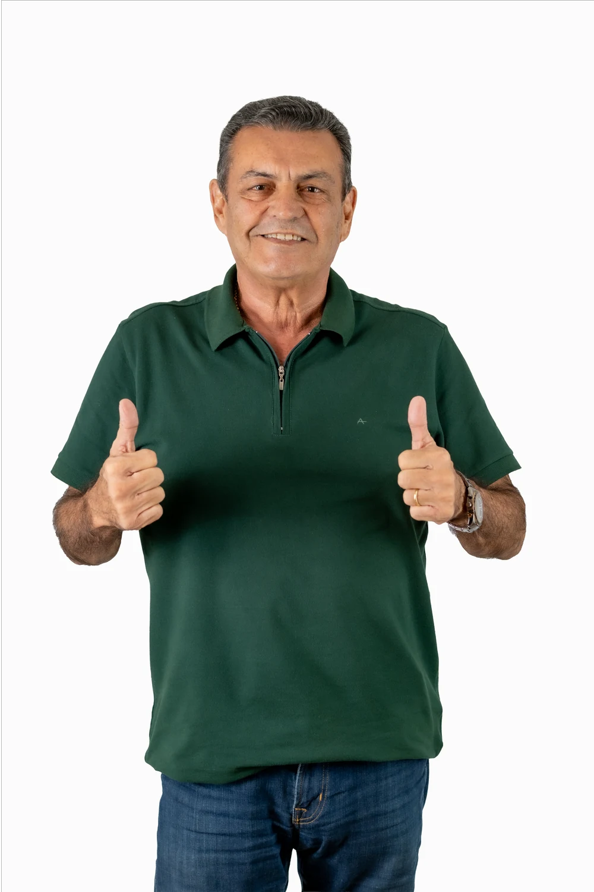
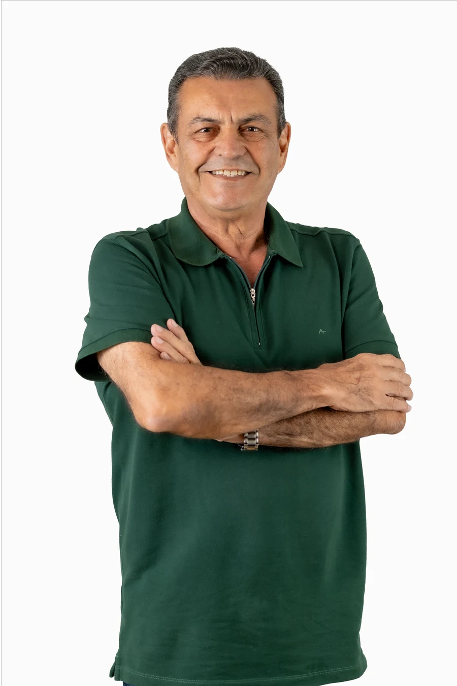

Ex-Secretário de Segurança Pública do Amazonas e Coronel da Polícia Militar. Planejamento, integração e presença do Estado para proteger as famílias amazonenses.

Coronel da Polícia Militar do Amazonas, Bonates construiu sua trajetória enfrentando o crime organizado e fortalecendo as instituições de segurança do Estado.

Coronel da Polícia Militar do Amazonas, comandou a Secretaria de Segurança Pública (SSP-AM) na gestão Wilson Lima até 2021, coordenando ações integradas entre as forças policiais e os órgãos de segurança do Estado.
Liderou a implantação da Base Fluvial Arpão, marco no enfrentamento ao tráfico de drogas pelos rios da Amazônia, e a aquisição do primeiro tanque tático blindado da Companhia de Operações Especiais (COE), além de expandir os investimentos em inteligência e integração entre as forças policiais.
As iniciativas contribuíram para o aumento das apreensões de drogas, armas e munições, consolidando uma estratégia baseada em tecnologia, planejamento e presença efetiva do Estado nas áreas mais vulneráveis ao crime organizado.
Em 2022, foi candidato a deputado federal pelo União Brasil e recebeu mais de 20 mil votos, consolidando-se como uma das principais lideranças ligadas à segurança pública no Estado. Hoje, é candidato a Deputado Estadual pelo Podemos, com a proposta de ampliar o debate sobre segurança, fortalecimento das instituições e proteção das famílias amazonenses.
Quatro frentes de atuação construídas a partir de mais de duas décadas de experiência prática em segurança pública.
Planejamento, inteligência e integração entre as forças de segurança para reduzir a criminalidade de forma permanente.
Presença do Estado e políticas públicas permanentes, com continuidade acima de gestões e ciclos eleitorais.
Ações de inteligência e prevenção antes da ocorrência do crime, não apenas resposta depois que ele acontece.
Segurança como condição para a vida em comunidade — bairros, escolas e famílias amazonenses protegidas.
Identificou um problema de segurança no seu bairro? Registre aqui. Sua denúncia é enviada diretamente para o gabinete via WhatsApp.
O canal oficial da campanha é o Instagram — bastidores, agenda e as propostas para o Amazonas.
Siga para acompanhar a agenda de campanha e as propostas para o Amazonas em primeira mão.
Acompanhe, compartilhe e ajude a levar essa proposta a mais famílias amazonenses.